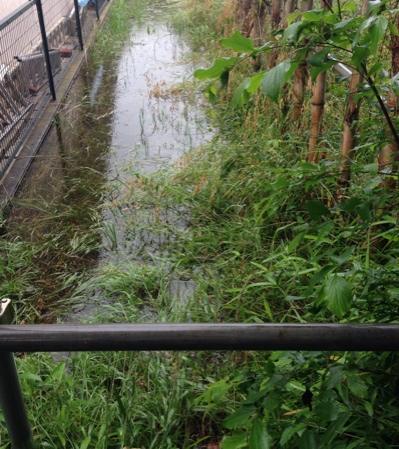
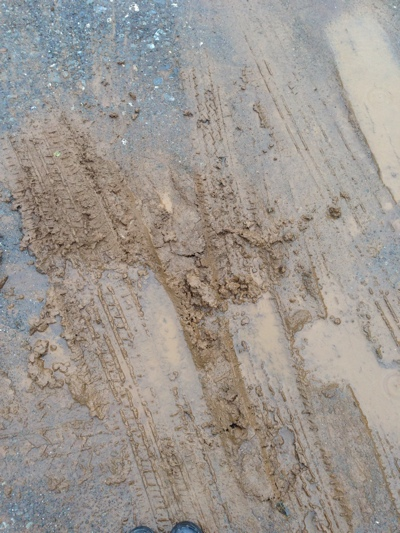
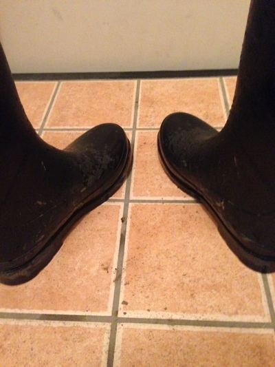

2014/06/11 20:02
長靴の話を夫に打ち明けてから、だいぶスッキリしたのだけれど…
解放された事により、願望が増して行った。
子供の頃の泥んこ遊びは無意識にしていたし、その行為がオカシイなんて考えた事も無かった。
汚しちゃイケナイって思いながらも…気が付いたら足を伸ばして汚していたの。
でも、ただそれだけだよ。
子供ってみんな水溜りで遊んだりするでしょ？
誰でもある衝動だって。
性癖なんかじゃない。
気が付いたらスマホの天気予報で降水確率を毎日チェックしている自分がいる。
前までは『雨だって～洗濯乾かないねぇ』ってぼやいていた。
長靴を持っていなかったから出掛けるには少々不便だったし、洗濯物が乾かないのは困るから。
でも、今は違う理由で降水確率をチェックしている。
『今日は雨降るかな？』期待での理由に変わっていた。
今日は午後から雨の予報。
『なかなか降らないなぁ…』
天気予報通り午後から雨が降って来た。
ちょっとワクワクして来た。
何時もなら午前中に買い物を済ませていたのだけれど、『今日は買物序でに雨が降ったらこの前汚した長靴を洗いに行こう！』そう決めていた。
なかなか雨量が増さないので、夕方まで待ってから長靴を履いた。
『何時も通りの道じゃ水溜りが少ないから、今日は別のルートで行こう！』早速家を出ると、遠回りの道へ足を運ぶ。
歩いて早速見付けた水溜りは見るからに深くて未知の物だった。
さすがにこれは怖くて踏み込む気持にはならなかったものの少しドキドキした。
そこから暫く浅い水溜りしか見付からない。
浅いけど片っ端から水溜りという水溜りは全て足を入れてパチャパチャとさせた。
また、心がスーッと気持良くなるのが解った。
通った事の無い道へ道へと移動して、やっとクルブシ位の深さの水溜りを見付けたけれど、水溜りの目の前には窓を全開にした一軒家がある。
見られちゃうかな？どうしよう…でも、入りたい。
今日は透明な傘を差して来てしまったから、顔を隠す事も出来ない。
でも、どーしても入りたい！
本当数十秒だけだけど水溜りに足を入れて、長靴同士を擦り合わせた。
とってもドキドキして堪らない。
逃げる様にその場を立ち去った。
結局、行きはほとんど浅い水溜りだけで長靴を洗える程の深さは無かった。
買い物を済ませて、家までの帰り道。
やっぱり帰り道も普段通った事の無い道を選んだ。
でも、失敗だったかなぁ？全然水溜りが無いよ。
このままじゃ家に着いちゃう。
ちょっと残念な気持で歩いていたら、ニュルニュル出来そうな泥の塊が見付かった！
辺りは一面見渡せる程見通しが良い。
車も近くを通っている。
でも、これを踏まなかったら絶対に後悔する。
悩む程の事は無かった。
長靴の先を泥に差し込んでみると、思った通りにドロドロしている。
もっと足を突っ込んでみるとニュルニュルと長靴にまとわりつく。
長靴の底が泥に吸い付かれている様な感覚が長靴越しに足に伝わって来る。
もっとネチョネチョしたい！
でも、見られちゃうかも…
まだまだ遊びたいけれど、我慢して泥から足を抜き出した。
やっぱり、泥がベッチョリ長靴に貼り付いてしまった。
解ってはいたけれど、凄くイケナイ事をした気分になる。
早く洗わないと！辺りを見回して水溜りを探す。
クルブシ辺りまで浸かれる水溜りがあったので、急いで足を突っ込んだ。
あれ…洗う筈だったのに…足踏みする度に底に積った泥が水中内で舞い上がり、ドロドロして濁ってしまった。
この水溜りは思ったより粘っこくて、長靴の汚れが全然落ちない。
何度も何度も長靴を擦り合わせてみたけれど、汚れを広げている気がした。
でも、気持ちいい…
水溜りに夢中になっていたら、犬の散歩をしている人が直ぐ側まで近付いていた。
あ…見られちゃう…顔を逸らして何事もなかったかの様にその場所を離れた。
その後も小さい水溜りを踏み付けながら家に着いた。
長靴を洗って来る筈が…結局汚れたまま帰る事になっちゃった。
また汚れた長靴を夫に見られちゃう…恥ずかしい。
気が付いたら毎日長靴の事ばかり考えている。
子供の頃の無意識に行っていたソレとは違い、今は意識的にソレをしている。
子供の頃のドキドキなんて比べものにならない位、ドキドキしている自分がいる。
長靴の事を考えているとね。
トロトロになっちゃうの。
絶対違う！って思っていたんだけど、長靴の事を考える度にジンジンして来て抑えるのが大変。
もうここまで来たら否定なんて出来ないよ。
性癖なんかじゃない！なんて。
いつもトロトロにさせて、雨が降るのを待っているの。